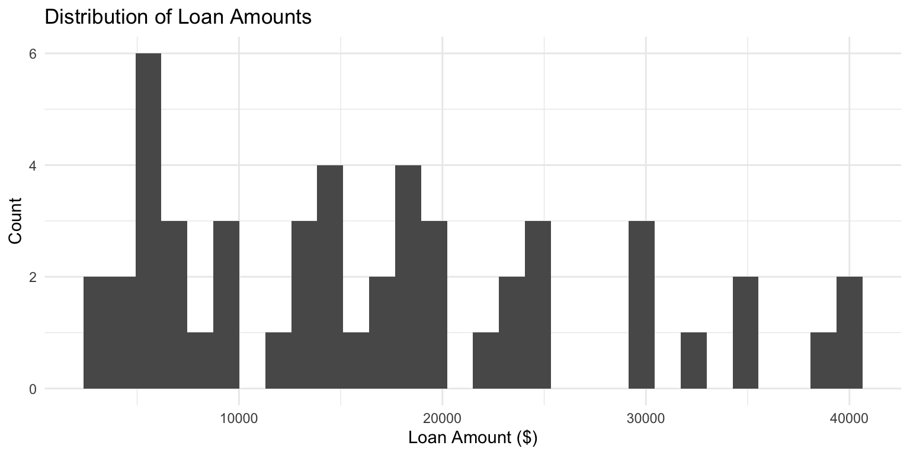
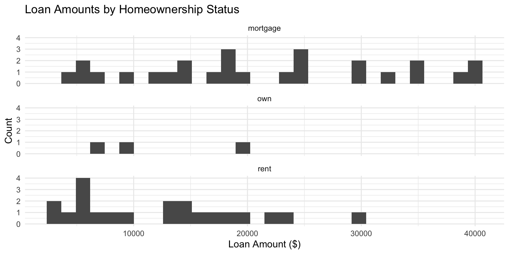
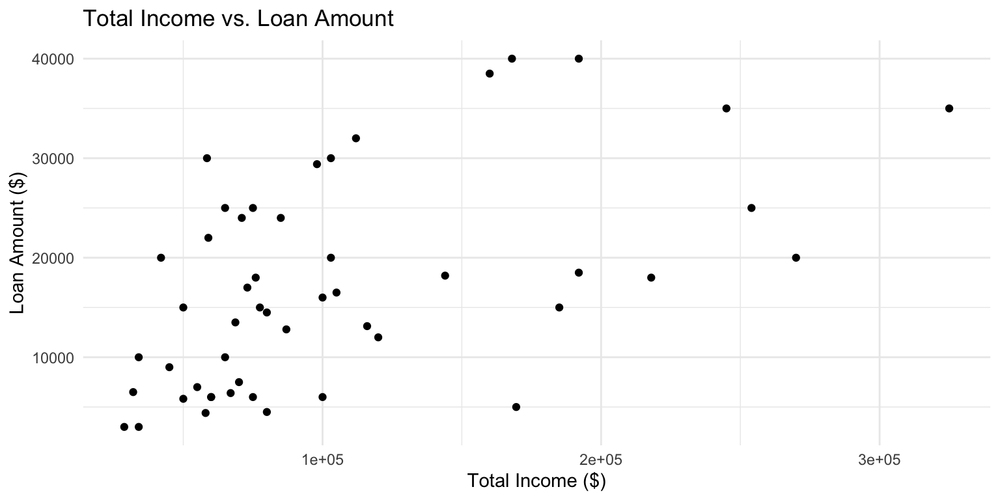
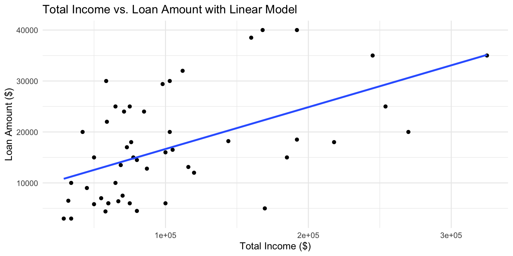
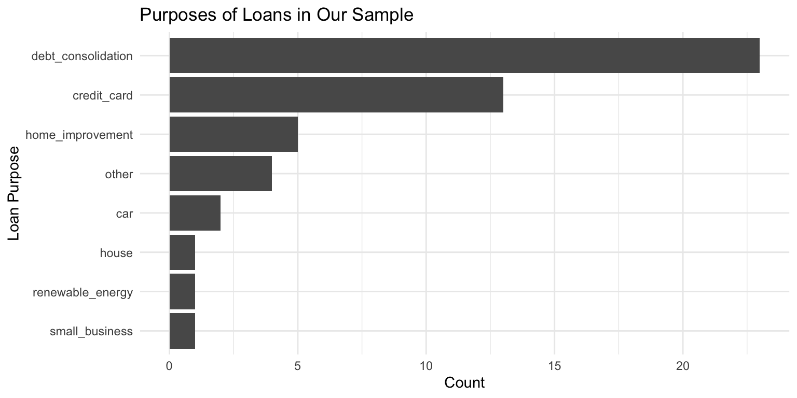

Getting to Know Your Data with R
Today we will learn how to:
Exploratory Data Analysis is the process of using visualizations and summary statistics to better understand the structure, patterns, and relationships in your data.
The goal is to ask questions and let the data guide your understanding.
We need two R packages:
tidyverseA collection of packages for data wrangling and visualization including:
ggplot2 (plots)dplyr (data manipulation)forcats (factors)openintroA package from our textbook that includes:
loan50 dataset we’ll explore todayTip: Always load your libraries at the top of your script!
loan50 Datasetglimpse()Rows: 50
Columns: 18
$ state <fct> NJ, CA, SC, CA, OH, IN, NY, MO, FL, FL, MD, HI…
$ emp_length <dbl> 3, 10, NA, 0, 4, 6, 2, 10, 6, 3, 8, 10, 10, 2,…
$ term <dbl> 60, 36, 36, 36, 60, 36, 36, 36, 60, 60, 36, 36…
$ homeownership <fct> rent, rent, mortgage, rent, mortgage, mortgage…
$ annual_income <dbl> 59000, 60000, 75000, 75000, 254000, 67000, 288…
$ verified_income <fct> Not Verified, Not Verified, Verified, Not Veri…
$ debt_to_income <dbl> 0.55752542, 1.30568333, 1.05628000, 0.57434667…
$ total_credit_limit <int> 95131, 51929, 301373, 59890, 422619, 349825, 1…
$ total_credit_utilized <int> 32894, 78341, 79221, 43076, 60490, 72162, 2872…
$ num_cc_carrying_balance <int> 8, 2, 14, 10, 2, 4, 1, 3, 10, 4, 3, 4, 3, 2, 3…
$ loan_purpose <fct> debt_consolidation, credit_card, debt_consolid…
$ loan_amount <int> 22000, 6000, 25000, 6000, 25000, 6400, 3000, 1…
$ grade <fct> B, B, E, B, B, B, D, A, A, C, D, A, A, A, A, E…
$ interest_rate <dbl> 10.90, 9.92, 26.30, 9.92, 9.43, 9.92, 17.09, 6…
$ public_record_bankrupt <int> 0, 1, 0, 0, 0, 0, 0, 0, 0, 1, 0, 0, 0, 0, 0, 0…
$ loan_status <fct> Current, Current, Current, Current, Current, C…
$ has_second_income <lgl> FALSE, FALSE, FALSE, FALSE, FALSE, FALSE, FALS…
$ total_income <dbl> 59000, 60000, 75000, 75000, 254000, 67000, 288…When you first encounter a dataset, always ask:
For loan50: 50 observations, 18 variables from Lending Club.
We don’t need all 18 variables. Let’s narrow it down to 9:
What happened?
loans|>) to pass loan50 into select()Some variables are stored as fct (factor) — let’s convert to character:
Now we’re ready to explore!
Rows: 50
Columns: 9
$ loan_amount <int> 22000, 6000, 25000, 6000, 25000, 6400, 3000, 14500,…
$ interest_rate <dbl> 10.90, 9.92, 26.30, 9.92, 9.43, 9.92, 17.09, 6.08, …
$ term <dbl> 60, 36, 36, 36, 60, 36, 36, 36, 60, 60, 36, 36, 36,…
$ grade <chr> "B", "B", "E", "B", "B", "B", "D", "A", "A", "C", "…
$ state <chr> "NJ", "CA", "SC", "CA", "OH", "IN", "NY", "MO", "FL…
$ total_income <dbl> 59000, 60000, 75000, 75000, 254000, 67000, 28800, 8…
$ homeownership <chr> "rent", "rent", "mortgage", "rent", "mortgage", "mo…
$ loan_purpose <chr> "debt_consolidation", "credit_card", "debt_consolid…
$ total_credit_limit <int> 95131, 51929, 301373, 59890, 422619, 349825, 15980,…To answer this, we’ll use:

ggplot CallEach piece is a layer added with +
When describing a distribution, always mention:
We can split our histogram by a categorical variable using facet_wrap().

Add group_by() before summarise() to get stats per group:
# A tibble: 3 × 6
homeownership mean median sd Q1 Q3
<chr> <dbl> <dbl> <dbl> <dbl> <dbl>
1 mortgage 21388. 19250 11145. 13225 29850
2 own 12000 9000 7000 8000 14500
3 rent 12479. 13125 7578. 6000 17000Use count() and arrange() to build a frequency table:
Use mutate() to calculate the proportion:
We use a scatter plot when we have two numerical variables:
total_incomeloan_amount
Use geom_smooth(method = lm) to overlay a regression line:

The lm() function gives us the intercept and slope:
Call:
lm(formula = loan_amount ~ total_income, data = loans)
Coefficients:
(Intercept) total_income
8.443e+03 8.211e-02 The general form of the equation is:
\[\hat{y} = b_0 + b_1 \times x\]
# A tibble: 1 × 6
mean_income sd_income mean_loan sd_loan r r_squared
<dbl> <dbl> <dbl> <dbl> <dbl> <dbl>
1 105221. 68142. 17083 10455. 0.535 0.286Slope → Direction of the association
R-squared → Strength of the association
For categorical data, we use bar charts and frequency tables.

fct_infreq()fct_infreq() → orders the categories by frequencyfct_rev() → reverses the order so the most frequent is at the topThis makes bar charts much easier to read!
glimpse(), view())select(), mutate())glimpse()select()mutate()filter()group_by()summarise()count()arrange()ggplot() + aes()geom_histogram()geom_bar()geom_point()geom_smooth()facet_wrap()labs()theme_minimal()Open the tutorial file and work through each section.
Remember:
Happy exploring!